值表示：从表格到函数
在前面各章中，状态值和动作值都是用表格（tabular）来表示的。表格方法直观易懂，但在处理大规模状态空间或动作空间时效率低下。本章引入 值函数方法（value function method） ，使用函数来近似表示状态值或动作值，这已成为表示价值的标准方法，也是将人工神经网络引入强化学习作为函数近似器的切入点。
基本思想
假设有 n n n { s i } i = 1 n \{s_i\}_{i=1}^n { s i } i = 1 n { v π ( s i ) } i = 1 n \{v_\pi(s_i)\}_{i=1}^n { v π ( s i ) } i = 1 n
若采用表格方法，估计值 { v ^ ( s i ) } i = 1 n \{\hat{v}(s_i)\}_{i=1}^n { v ^ ( s i ) } i = 1 n
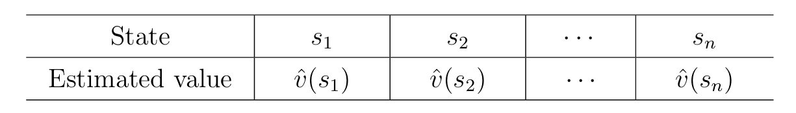
如果采用函数近似，则用函数 v ^ ( s , w ) \hat{v}(s,w) v ^ ( s , w ) v π ( s ) v_\pi(s) v π ( s ) w w w 参数向量 ，v ^ ( s , w ) \hat{v}(s,w) v ^ ( s , w ) v ^ w ( s ) \hat{v}_w(s) v ^ w ( s ) 线性函数 ：
v ^ ( s , w ) = a s + b = [ s , 1 ] ⏟ ϕ T ( s ) [ a b ] ⏟ w = ϕ T ( s ) w . \hat {v} (s, w) = a s + b = \underbrace {[ s , 1 ]} _ {\phi^ {T} (s)} \underbrace {\left[ \begin{array}{c} a \\ b \end{array} \right]} _ {w} = \phi^ {T} (s) w.
v ^ ( s , w ) = a s + b = ϕ T ( s ) [ s , 1 ] w [ a b ] = ϕ T ( s ) w .
其中 ϕ ( s ) ∈ R 2 \phi(s)\in\mathbb{R}^2 ϕ ( s ) ∈ R 2 s s s 特征向量（feature vector） 。
注意这里的特征向量（feature vector）并不是线性代数中 A x = λ x A\mathbf{x}=\lambda\mathbf{x} A x = λ x 输入数据的数值化表示 ，用于描述状态 s s s 属性 ；后者是矩阵运算的固有属性 。
在线性函数近似的应用中，需要选取合适的 feature vector，这往往需要拥有对目标任务的先验知识。但是先验知识在实际应用中通常是未知的，在这种情况下比较流行的解决方法是用神经网络 去代替线性函数近似。
更一般的，我们可以使用更高阶的多项式：
v ^ ( s , w ) = a s 2 + b s + c = [ s 2 , s , 1 ] [ a b c ] = ϕ T ( s ) w \hat{v}(s,w)=as^2+bs+c=[s^2,s,1]\begin{bmatrix}a\\b\\c\end{bmatrix}=\phi^T(s)w
v ^ ( s , w ) = a s 2 + b s + c = [ s 2 , s , 1 ] a b c = ϕ T ( s ) w
注意：v ^ ( s , w ) \hat{v}(s,w) v ^ ( s , w ) w w w 线性 的（尽管在 s s s 线性函数近似（linear function approximation） 。
表格方法与函数方法的对比
值的读取（Retrieve）
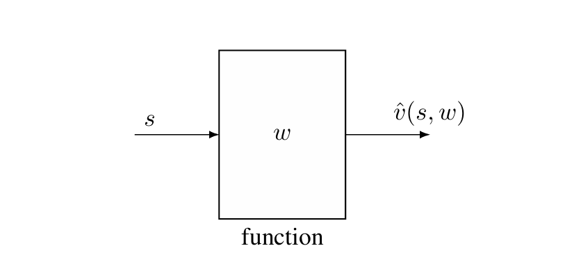
表格方法
函数近似方法
直接读取表中对应条目
将状态 s s s
时间复杂度 O ( 1 ) O(1) O ( 1 )
需要前向传播（神经网络）或计算 ϕ T ( s ) w \phi^T(s)w ϕ T ( s ) w
值的更新（Update）
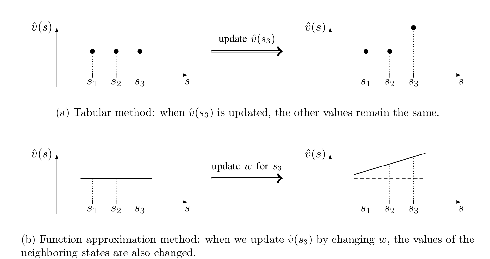
表格方法
函数近似方法
直接重写表中对应条目
必须更新参数 w w w
只更新被访问状态的值
更新 w w w 所有 状态的值
对于值函数近似方法，一个状态的经验样本可以泛化 到帮助估计其他状态的值，因此其具有更强的泛化能力。
存储效率
表格方法：需要存储 n n n
函数近似方法：只需存储低维参数 向量 w w w
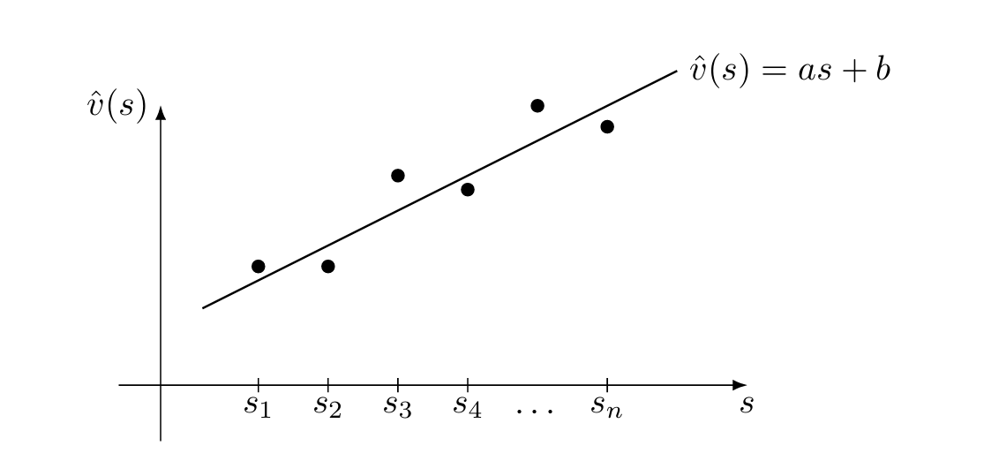
值函数近似方法通过低维向量 去表示高维数据 ，必然会丢失一些信息，导致其会牺牲一定的精度——这是称为"近似"的原因。上图是通过二维的特征向量去拟合 n n n
最小二乘问题
如果已知 { v π ( s i ) } i = 1 n \{v_\pi(s_i)\}_{i=1}^n { v π ( s i ) } i = 1 n w w w
J 1 = ∑ i = 1 n ( v ^ ( s i , w ) − v π ( s i ) ) 2 = ∑ i = 1 n ( ϕ T ( s i ) w − v π ( s i ) ) 2 = ∥ [ ϕ T ( s 1 ) ⋮ ϕ T ( s n ) ] w − [ v π ( s 1 ) ⋮ v π ( s n ) ] ∥ 2 ≐ ∥ Φ w − v π ∥ 2 , \begin{align} J _ {1} = \sum_ {i = 1} ^ {n} \left(\hat {v} \left(s _ {i}, w\right) - v _ {\pi} \left(s _ {i}\right)\right) ^ {2} = \sum_ {i = 1} ^ {n} \left(\phi^ {T} \left(s _ {i}\right) w - v _ {\pi} \left(s _ {i}\right)\right) ^ {2} \\ = \left\| \left[ \begin{array}{c} \phi^ {T} \left(s _ {1}\right) \\ \vdots \\ \phi^ {T} \left(s _ {n}\right) \end{array} \right] w - \left[ \begin{array}{c} v _ {\pi} \left(s _ {1}\right) \\ \vdots \\ v _ {\pi} \left(s _ {n}\right) \end{array} \right] \right\| ^ {2} \doteq \| \Phi w - v _ {\pi} \| ^ {2}, \\ \end{align}
J 1 = i = 1 ∑ n ( v ^ ( s i , w ) − v π ( s i ) ) 2 = i = 1 ∑ n ( ϕ T ( s i ) w − v π ( s i ) ) 2 = ϕ T ( s 1 ) ⋮ ϕ T ( s n ) w − v π ( s 1 ) ⋮ v π ( s n ) 2 ≐ ∥Φ w − v π ∥ 2 ,
其中 Φ ≐ [ ϕ T ( s 1 ) ⋮ ϕ T ( s n ) ] ∈ R n × m \Phi \doteq \left[ \begin{array}{c} \phi^ {T} \left(s _ {1}\right) \\ \vdots \\ \phi^ {T} \left(s _ {n}\right) \end{array} \right] \in \mathbb {R} ^ {n \times m} Φ ≐ ϕ T ( s 1 ) ⋮ ϕ T ( s n ) ∈ R n × m v π ≐ [ v π ( s 1 ) ⋮ v π ( s n ) ] ∈ R n v _ {\pi} \doteq \left[ \begin{array}{c} v _ {\pi} \left(s _ {1}\right) \\ \vdots \\ v _ {\pi} \left(s _ {n}\right) \end{array} \right] \in \mathbb {R} ^ {n} v π ≐ v π ( s 1 ) ⋮ v π ( s n ) ∈ R n
最小二乘问题的最优解，也就是最优的参数 为：
w ∗ = ( Φ T Φ ) − 1 Φ v π w^*=(\Phi^T\Phi)^{-1}\Phi v_\pi
w ∗ = ( Φ T Φ ) − 1 Φ v π
基于函数近似的状态价值 TD 学习
本节展示如何将函数近似方法融入 TD 学习，以估计给定策略的状态值。
目标函数
设 v π ( s ) v_\pi(s) v π ( s ) v ^ ( s , w ) \hat{v}(s,w) v ^ ( s , w ) s s s w w w v ^ ( s , w ) \hat{v}(s,w) v ^ ( s , w ) v π ( s ) v_\pi(s) v π ( s )
目标函数为：
J ( w ) = E [ ( v π ( S ) − v ^ ( S , w ) ) 2 ] J(w)=\mathbb{E}[(v_\pi(S)-\hat{v}(S,w))^2]
J ( w ) = E [( v π ( S ) − v ^ ( S , w ) ) 2 ]
为了分析期望值，需要知道随机变量 S S S
方式一：均匀分布
J ( w ) = 1 n ∑ s ∈ S ( v π ( s ) − v ^ ( s , w ) ) 2 J(w)=\frac{1}{n}\sum_{s\in\mathcal{S}}(v_\pi(s)-\hat{v}(s,w))^2
J ( w ) = n 1 s ∈ S ∑ ( v π ( s ) − v ^ ( s , w ) ) 2
将所有状态视为同等重要。但这种方式没有考虑策略下的实际动态——某些状态可能很少被访问。
方式二：平稳分布（Stationary Distribution）
J ( w ) = ∑ s ∈ S d π ( s ) ( v π ( s ) − v ^ ( s , w ) ) 2 J(w)=\sum_{s\in\mathcal{S}}d_\pi(s)(v_\pi(s)-\hat{v}(s,w))^2
J ( w ) = s ∈ S ∑ d π ( s ) ( v π ( s ) − v ^ ( s , w ) ) 2
其中 d π ( s ) d_\pi(s) d π ( s ) π \pi π 平稳分布 ，表示长时间后智能体处于状态 s s s
平稳分布 d π d_\pi d π d π T = d π T P π d_\pi^T=d_\pi^TP_\pi d π T = d π T P π P π P_\pi P π π \pi π
直观理解：无论从哪个状态开始，经过足够长的时间后，智能体处于各状态的概率分布收敛到 d π d_\pi d π
优化算法
内容
使用梯度下降最小化 J ( w ) J(w) J ( w )
w k + 1 = w k − α k ∇ w J ( w k ) w_{k+1}=w_k-\alpha_k\nabla_wJ(w_k)
w k + 1 = w k − α k ∇ w J ( w k )
计算梯度：
∇ w J ( w k ) = ∇ w E [ ( v π ( S ) − v ^ ( S , w k ) ) 2 ] = E [ ∇ w ( v π ( S ) − v ^ ( S , w k ) ) 2 ] = 2 E [ ( v π ( S ) − v ^ ( S , w k ) ) ( − ∇ w v ^ ( S , w k ) ) ] = − 2 E [ ( v π ( S ) − v ^ ( S , w k ) ) ∇ w v ^ ( S , w k ) ] . \begin{align} \nabla_ {w} J \left(w _ {k}\right) &= \nabla_ {w} \mathbb {E} \left[ \left(v _ {\pi} (S) - \hat {v} \left(S, w _ {k}\right)\right) ^ {2} \right] \\ &= \mathbb {E} \left[ \nabla_ {w} \left(v _ {\pi} (S) - \hat {v} \left(S, w _ {k}\right)\right) ^ {2} \right] \\ &= 2 \mathbb {E} \left[ \left(v _ {\pi} (S) - \hat {v} \left(S, w _ {k}\right)\right) \left(- \nabla_ {w} \hat {v} \left(S, w _ {k}\right)\right) \right] \\ &= - 2 \mathbb {E} \left[ \left(v _ {\pi} (S) - \hat {v} \left(S, w _ {k}\right)\right) \nabla_ {w} \hat {v} \left(S, w _ {k}\right) \right]. \\ \end{align}
∇ w J ( w k ) = ∇ w E [ ( v π ( S ) − v ^ ( S , w k ) ) 2 ] = E [ ∇ w ( v π ( S ) − v ^ ( S , w k ) ) 2 ] = 2 E [ ( v π ( S ) − v ^ ( S , w k ) ) ( − ∇ w v ^ ( S , w k ) ) ] = − 2 E [ ( v π ( S ) − v ^ ( S , w k ) ) ∇ w v ^ ( S , w k ) ] .
因此梯度下降的迭代公式为：
w k + 1 = w k + 2 α k E [ ( v π ( S ) − v ^ ( S , w k ) ) ∇ w v ^ ( S , w k ) ] w_{k+1}=w_k+2\alpha_k\mathbb{E}[(v_\pi(S)-\hat{v}(S,w_k))\nabla_w\hat{v}(S,w_k)]
w k + 1 = w k + 2 α k E [( v π ( S ) − v ^ ( S , w k )) ∇ w v ^ ( S , w k )]
不失一般性，可以将 α k \alpha_k α k 2 2 2 α k \alpha_k α k w k + 1 = w k + α k E [ ( v π ( S ) − v ^ ( S , w k ) ) ∇ w v ^ ( S , w k ) ] w_{k+1}=w_k+\alpha_k\mathbb{E}[(v_\pi(S)-\hat{v}(S,w_k))\nabla_w\hat{v}(S,w_k)] w k + 1 = w k + α k E [( v π ( S ) − v ^ ( S , w k )) ∇ w v ^ ( S , w k )]
使用随机梯度下降（SGD），用单个样本 s t s_t s t
w t + 1 = w t + α t ( v π ( s t ) − v ^ ( s t , w t ) ) ∇ w v ^ ( s t , w t ) w_{t+1}=w_t+\alpha_t(v_\pi(s_t)-\hat{v}(s_t,w_t))\nabla_w\hat{v}(s_t,w_t)
w t + 1 = w t + α t ( v π ( s t ) − v ^ ( s t , w t )) ∇ w v ^ ( s t , w t )
但 v π ( s t ) v_\pi(s_t) v π ( s t )
MC 方法 ：用回报 g t g_t g t v π ( s t ) v_\pi(s_t) v π ( s t )
w t + 1 = w t + α t ( g t − v ^ ( s t , w t ) ) ∇ w v ^ ( s t , w t ) w_{t+1}=w_t+\alpha_t(g_t-\hat{v}(s_t,w_t))\nabla_w\hat{v}(s_t,w_t)
w t + 1 = w t + α t ( g t − v ^ ( s t , w t )) ∇ w v ^ ( s t , w t )
TD 方法 ：用 r t + 1 + γ v ^ ( s t + 1 , w t ) r_{t+1}+\gamma\hat{v}(s_{t+1},w_t) r t + 1 + γ v ^ ( s t + 1 , w t ) v π ( s t ) v_\pi(s_t) v π ( s t )
w t + 1 = w t + α t [ r t + 1 + γ v ^ ( s t + 1 , w t ) − v ^ ( s t , w t ) ] ∇ w v ^ ( s t , w t ) w_{t+1}=w_t+\alpha_t[r_{t+1}+\gamma\hat{v}(s_{t+1},w_t)-\hat{v}(s_t,w_t)]\nabla_w\hat{v}(s_t,w_t)
w t + 1 = w t + α t [ r t + 1 + γ v ^ ( s t + 1 , w t ) − v ^ ( s t , w t )] ∇ w v ^ ( s t , w t )
伪代码
使用值函数近似的 TD 方法的伪代码如下：
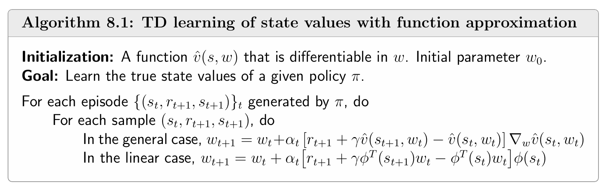
函数近似器的选择
为了能够应用值函数近似的 TD 方法，需要选择合适的函数近似器 v ^ ( s , w ) \hat{v}(s,w) v ^ ( s , w ) v ^ ( s , w ) = ϕ T ( s ) w \hat{v}(s,w)=\phi^T(s)w v ^ ( s , w ) = ϕ T ( s ) w
线性函数近似
线性函数近似的表达式为
v ^ ( s , w ) = ϕ T ( s ) w \hat{v}(s,w)=\phi^T(s)w
v ^ ( s , w ) = ϕ T ( s ) w
梯度为 ∇ w v ^ ( s , w ) = ϕ ( s ) \nabla_w\hat{v}(s,w)=\phi(s) ∇ w v ^ ( s , w ) = ϕ ( s )
w t + 1 = w t + α t [ r t + 1 + γ ϕ T ( s t + 1 ) w t − ϕ T ( s t ) w t ] ϕ ( s t ) w_{t+1}=w_t+\alpha_t[r_{t+1}+\gamma\phi^T(s_{t+1})w_t-\phi^T(s_t)w_t]\phi(s_t)
w t + 1 = w t + α t [ r t + 1 + γ ϕ T ( s t + 1 ) w t − ϕ T ( s t ) w t ] ϕ ( s t )
这称为 TD-Linear 算法（上面伪代码中的 linear case）。
事实上，表格 TD 是 TD-Linear 的特例 ：
选择特征向量 ϕ ( s ) = e s ∈ R n \phi(s)=e_s\in\mathbb{R}^n ϕ ( s ) = e s ∈ R n e s e_s e s s s s v ^ ( s , w ) = e s T w = w ( s ) \hat{v}(s,w)=e_s^Tw=w(s) v ^ ( s , w ) = e s T w = w ( s )
w t + 1 ( s t ) = w t ( s t ) + α t ( r t + 1 + γ w t ( s t + 1 ) − w t ( s t ) ) w_{t+1}(s_t)=w_t(s_t)+\alpha_t(r_{t+1}+\gamma w_t(s_{t+1})-w_t(s_t))
w t + 1 ( s t ) = w t ( s t ) + α t ( r t + 1 + γ w t ( s t + 1 ) − w t ( s t ))
这正是上一章节的表格 TD 算法。
特征向量的选择
多项式特征 ：
一阶：ϕ ( s ) = [ 1 , x , y ] T ∈ R 3 \phi(s)=[1,x,y]^T\in\mathbb{R}^3 ϕ ( s ) = [ 1 , x , y ] T ∈ R 3
二阶：ϕ ( s ) = [ 1 , x , y , x 2 , y 2 , x y ] T ∈ R 6 \phi(s)=[1,x,y,x^2,y^2,xy]^T\in\mathbb{R}^6 ϕ ( s ) = [ 1 , x , y , x 2 , y 2 , x y ] T ∈ R 6
三阶：ϕ ( s ) = [ 1 , x , y , x 2 , y 2 , x y , x 3 , y 3 , x 2 y , x y 2 ] T ∈ R 10 \phi(s)=[1,x,y,x^2,y^2,xy,x^3,y^3,x^2y,xy^2]^T\in\mathbb{R}^{10} ϕ ( s ) = [ 1 , x , y , x 2 , y 2 , x y , x 3 , y 3 , x 2 y , x y 2 ] T ∈ R 10
傅里叶特征 ：
ϕ ( s ) = [ ⋮ cos ( π ( c 1 x + c 2 y ) ) ⋮ ] ∈ R ( q + 1 ) 2 \phi(s)=\begin{bmatrix}\vdots\\ \cos(\pi(c_1x+c_2y))\\ \vdots\end{bmatrix}\in\mathbb{R}^{(q+1)^2}
ϕ ( s ) = ⋮ cos ( π ( c 1 x + c 2 y )) ⋮ ∈ R ( q + 1 ) 2
其中 c 1 , c 2 ∈ { 0 , 1 , … , q } c_1,c_2\in\{0,1,\ldots,q\} c 1 , c 2 ∈ { 0 , 1 , … , q } ( q + 1 ) 2 (q+1)^2 ( q + 1 ) 2 ( q + 1 ) 2 (q+1)^2 ( q + 1 ) 2
例如当 q = 1 q=1 q = 1 ϕ ( s ) \phi(s) ϕ ( s )
ϕ ( s ) = [ cos ( π ( 0 x + 0 y ) ) cos ( π ( 0 x + 1 y ) ) cos ( π ( 1 x + 0 y ) ) cos ( π ( 1 x + 1 y ) ) ] = [ 1 cos ( π y ) cos ( π x ) cos ( π ( x + y ) ) ] ∈ R 4 . \phi (s) = \left[ \begin{array}{c} \cos \left(\pi (0 x + 0 y)\right) \\ \cos \left(\pi (0 x + 1 y)\right) \\ \cos \left(\pi (1 x + 0 y)\right) \\ \cos \left(\pi (1 x + 1 y)\right) \end{array} \right] = \left[ \begin{array}{c} 1 \\ \cos (\pi y) \\ \cos (\pi x) \\ \cos (\pi (x + y)) \end{array} \right] \in \mathbb {R} ^ {4}.
ϕ ( s ) = cos ( π ( 0 x + 0 y ) ) cos ( π ( 0 x + 1 y ) ) cos ( π ( 1 x + 0 y ) ) cos ( π ( 1 x + 1 y ) ) = 1 cos ( π y ) cos ( π x ) cos ( π ( x + y )) ∈ R 4 .
瓦片编码（tile coding）
特征向量维度越高，近似能力越强，但存储和计算开销也越大。
示例
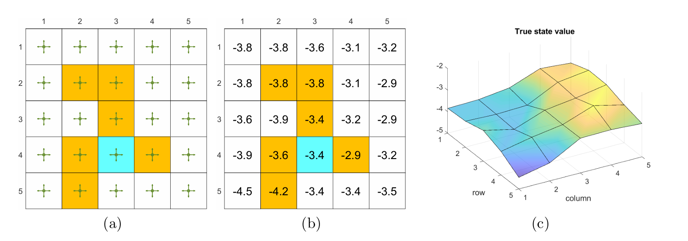
上图 (a) 是给定的当前策略，(b) 是该策略下的 state values（ground truth），© 是将 state values 通过 3D 面去具象表示。
下面通过使用不同的函数近似器，来估计当前策略下的 state values 。样本为 500 条 episodes，每个 episode 步长为 500，并随机选取状态-动作对作为起点。在每个例子中 w w w
多项式特征
首先，尝试多项式特征向量 。在当前的 grid world 情境中，一个状态 s s s ( x , y ) (x,y) ( x , y ) x , y x,y x , y [ − 1 , + 1 ] [-1,+1] [ − 1 , + 1 ]
最简单的特征向量是
ϕ ( s ) = [ x y ] ∈ R 2 . \phi (s) = \left[ \begin{array}{c} x \\ y \end{array} \right] \in \mathbb {R} ^ {2}.
ϕ ( s ) = [ x y ] ∈ R 2 .
从而有
v ^ ( s , w ) = ϕ T ( s ) w = [ x , y ] [ w 1 w 2 ] = w 1 x + w 2 y . \hat {v} (s, w) = \phi^ {T} (s) w = [ x, y ] \left[ \begin{array}{c} w _ {1} \\ w _ {2} \end{array} \right] = w _ {1} x + w _ {2} y.
v ^ ( s , w ) = ϕ T ( s ) w = [ x , y ] [ w 1 w 2 ] = w 1 x + w 2 y .
其中 w 1 x + w 2 y w_1x+w_2y w 1 x + w 2 y 过原点 的 2D 平面。由于 state values 的表面未必经过原点，因此需要为 v ^ ( s , w ) \hat{v}(s,w) v ^ ( s , w )
ϕ ( s ) = [ 1 x y ] ∈ R 3 \phi (s) = \left[ \begin{array}{c} 1 \\ x \\ y \end{array} \right] \in \mathbb {R} ^ {3}
ϕ ( s ) = 1 x y ∈ R 3
从而有
v ^ ( s , w ) = ϕ T ( s ) w = [ 1 , x , y ] [ w 1 w 2 w 3 ] = w 1 + w 2 x + w 3 y \hat {v} (s, w) = \phi^ {T} (s) w = [ 1, x, y ] \left[ \begin{array}{l} w _ {1} \\ w _ {2} \\ w _ {3} \end{array} \right] = w _ {1} + w _ {2} x + w _ {3} y
v ^ ( s , w ) = ϕ T ( s ) w = [ 1 , x , y ] w 1 w 2 w 3 = w 1 + w 2 x + w 3 y
通过该函数近似器拟合得到的平面为下图中的 (a)。根据 state values 的误差曲线可以看到即使估计的误差逐渐收敛，但是由于 2D 平面近似能力的局限性 ，误差无法降到 0。
为了增强近似能力，可以提高多项式特征的维数。下面分别使用
ϕ ( s ) = [ 1 , x , y , x 2 , y 2 , x y ] T ∈ R 6 \phi(s)=[1,x,y,x^2,y^2,xy]^T\in\mathbb{R}^6
ϕ ( s ) = [ 1 , x , y , x 2 , y 2 , x y ] T ∈ R 6
和
ϕ ( s ) = [ 1 , x , y , x 2 , y 2 , x y , x 3 , y 3 , x 2 y , x y 2 ] T ∈ R 10 \phi(s)=[1,x,y,x^2,y^2,xy,x^3,y^3,x^2y,xy^2]^T\in\mathbb{R}^{10}
ϕ ( s ) = [ 1 , x , y , x 2 , y 2 , x y , x 3 , y 3 , x 2 y , x y 2 ] T ∈ R 10
作为特征向量。拟合的结果分别为下图中 (b) 和 ©。
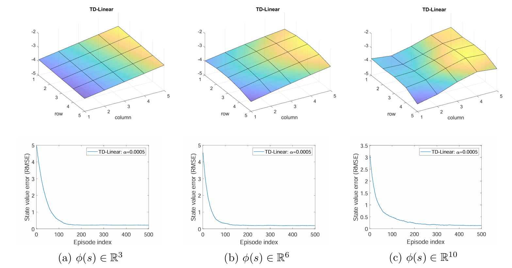
傅里叶特征
下面用傅里叶特征 作为线性函数近似的特征向量。x , y x,y x , y [ 0 , 1 ] [0,1] [ 0 , 1 ]
ϕ ( s ) = [ ⋮ cos ( π ( c 1 x + c 2 y ) ) ⋮ ] ∈ R ( q + 1 ) 2 \phi(s)=\begin{bmatrix}\vdots\\ \cos(\pi(c_1x+c_2y))\\ \vdots\end{bmatrix}\in\mathbb{R}^{(q+1)^2}
ϕ ( s ) = ⋮ cos ( π ( c 1 x + c 2 y )) ⋮ ∈ R ( q + 1 ) 2
其中 c 1 , c 2 ∈ { 0 , 1 , … , q } c_1,c_2\in\{0,1,\ldots,q\} c 1 , c 2 ∈ { 0 , 1 , … , q }
下图分别展示了 q = 1 , 2 , 3 q=1,2,3 q = 1 , 2 , 3
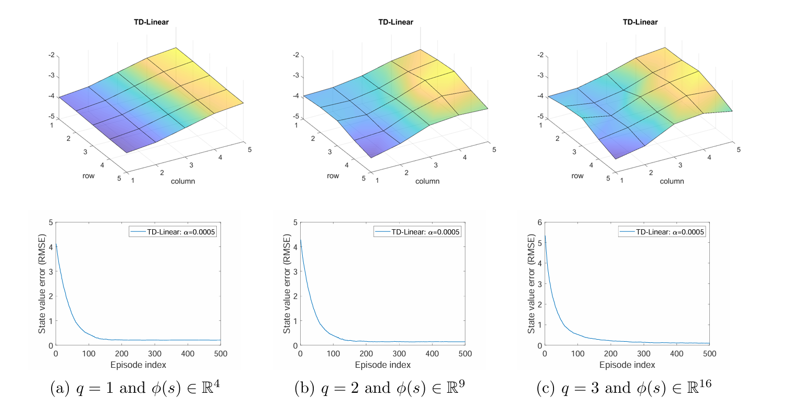
理论分析
待补充
基于函数近似的动作价值 TD 学习
上一届展示了 state values 估计，下面扩展到 action values 估计。
使用值函数近似的 Sarsa
迭代公式
用 q ^ ( s , a , w ) \hat{q}(s,a,w) q ^ ( s , a , w ) q π ( s , a ) q_\pi(s,a) q π ( s , a ) v ^ \hat{v} v ^ q ^ \hat{q} q ^
w t + 1 = w t + α t [ r t + 1 + γ q ^ ( s t + 1 , a t + 1 , w t ) − q ^ ( s t , a t , w t ) ] ∇ w q ^ ( s t , a t , w t ) w_{t+1}=w_t+\alpha_t[r_{t+1}+\gamma\hat{q}(s_{t+1},a_{t+1},w_t)-\hat{q}(s_t,a_t,w_t)]\nabla_w\hat{q}(s_t,a_t,w_t)
w t + 1 = w t + α t [ r t + 1 + γ q ^ ( s t + 1 , a t + 1 , w t ) − q ^ ( s t , a t , w t )] ∇ w q ^ ( s t , a t , w t )
线性情况下：q ^ ( s , a , w ) = ϕ T ( s , a ) w \hat{q}(s,a,w)=\phi^T(s,a)w q ^ ( s , a , w ) = ϕ T ( s , a ) w ∇ w q ^ ( s , a , w ) = ϕ ( s , a ) \nabla_w\hat{q}(s,a,w)=\phi(s,a) ∇ w q ^ ( s , a , w ) = ϕ ( s , a )
伪代码
当值函数近似的 Sarsa 与 policy improvement 结合时，能够找到最优策略。
下面的算法是找到从特定起点到特定终点 的最优路径。
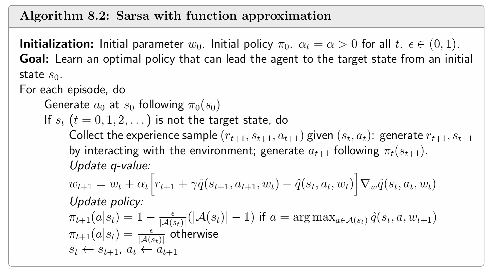
例子
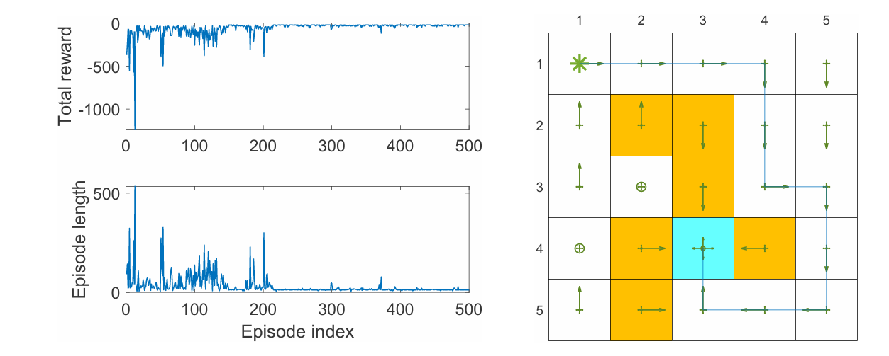
上面的例子是使用值函数近似的 Sarsa 找到从特定起点到特定终点 的最优路径，采用的线性函数近似器是 5 阶的傅里叶函数。
使用值函数近似的 Q-learning
迭代公式
将表格 Q-learning 扩展到函数近似：
w t + 1 = w t + α t [ r t + 1 + γ max a ∈ A ( s t + 1 ) q ^ ( s t + 1 , a , w t ) − q ^ ( s t , a t , w t ) ] ∇ w q ^ ( s t , a t , w t ) w_{t+1}=w_t+\alpha_t[r_{t+1}+\gamma\max_{a\in\mathcal{A}(s_{t+1})}\hat{q}(s_{t+1},a,w_t)-\hat{q}(s_t,a_t,w_t)]\nabla_w\hat{q}(s_t,a_t,w_t)
w t + 1 = w t + α t [ r t + 1 + γ a ∈ A ( s t + 1 ) max q ^ ( s t + 1 , a , w t ) − q ^ ( s t , a t , w t )] ∇ w q ^ ( s t , a t , w t )
与 Sarsa 的关键区别：用 max a q ^ ( s t + 1 , a , w t ) \max_{a}\hat{q}(s_{t+1},a,w_t) max a q ^ ( s t + 1 , a , w t ) q ^ ( s t + 1 , a t + 1 , w t ) \hat{q}(s_{t+1},a_{t+1},w_t) q ^ ( s t + 1 , a t + 1 , w t )
与表格 Q-learning 一样，使用值函数近似的 Q-learning 既可以使用 on-policy 也可以使用 off-policy 方式实现。
伪代码
下面的 Q-learning 算法使用 on-policy 实现，目的是找到从特定起点到特定终点 的最优路径。
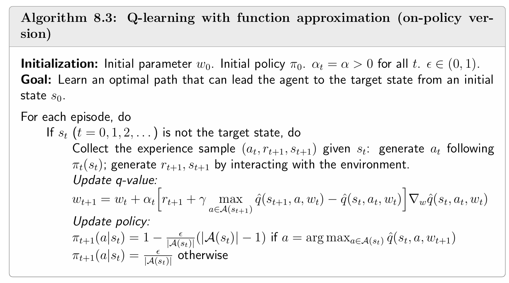
例子
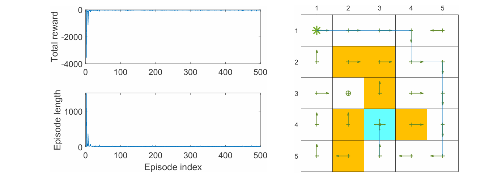
上面的例子是使用 on-policy 的值函数近似的 Q-learning 找到从特定起点到特定终点 的最优路径，采用的线性函数近似器是 5 阶的傅里叶函数。
到目前为止，尽管价值是用函数表示的，但是策略 π ( a ∣ s ) \pi(a\mid s) π ( a ∣ s ) 有限的状态和有限的动作 。
Deep Q-learning（DQN）
将深度神经网络与 Q-learning 结合，得到 deep Q-learning 或 deep Q-network（DQN）。这是最早且最成功的深度强化学习算法 之一。
算法描述
DQN 的目标是最小化目标函数
J = E [ ( R + γ max a ∈ A ( S ′ ) q ^ ( S ′ , a , w ) − q ^ ( S , A , w ) ) 2 ] J=\mathbb{E}\left[\left(R+\gamma\max_{a\in\mathcal{A}(S')}\hat{q}(S',a,w)-\hat{q}(S,A,w)\right)^2\right]
J = E [ ( R + γ a ∈ A ( S ′ ) max q ^ ( S ′ , a , w ) − q ^ ( S , A , w ) ) 2 ]
其中 ( S , A , R , S ′ ) (S,A,R,S') ( S , A , R , S ′ )
上述的目标函数可以看作是平方贝尔曼最优性误差 ，因为
q ( s , a ) = E [ R t + 1 + γ max a ∈ A ( S t + 1 ) q ( S t + 1 , a ) ∣ S t = s , A t = a ] , for all s,a q ( s, a )=\mathbb{E}\left[ R_{t+1}+\gamma \max_{a\in \mathcal{A} \left( S_{t+1} \right)} q \left( S_{t+1}, a \right) \Big| S_{t}=s, A_{t}=a \right],\text{ for all s,a}
q ( s , a ) = E [ R t + 1 + γ a ∈ A ( S t + 1 ) max q ( S t + 1 , a ) S t = s , A t = a ] , for all s,a
是 BOE，证明见上一章 Q-learning 部分。因此若 q ^ ( S , A , w ) \hat{q}(S,A,w) q ^ ( S , A , w )
为了最小化目标函数，可以使用梯度下降法，这需要计算 J J J w w w J J J w w w R + γ max a ∈ A ( S ′ ) q ^ ( S ′ , a , w ) R+\gamma\max_{a\in\mathcal{A}(S')}\hat{q}(S',a,w) R + γ max a ∈ A ( S ′ ) q ^ ( S ′ , a , w ) q ^ ( S , A , w ) \hat{q}(S,A,w) q ^ ( S , A , w ) 很难计算 出 w w w w w w 在短期内视为定值 w T w_T w T
J = E [ ( R + γ max a ∈ A ( S ′ ) q ^ ( S ′ , a , w T ) − q ^ ( S , A , w ) ) 2 ] J = \mathbb {E} \left[ \left(R + \gamma \max _ {a \in \mathcal {A} \left(S ^ {\prime}\right)} \hat {q} \left(S ^ {\prime}, a, w _ {T}\right) - \hat {q} (S, A, w)\right) ^ {2} \right]
J = E [ ( R + γ a ∈ A ( S ′ ) max q ^ ( S ′ , a , w T ) − q ^ ( S , A , w ) ) 2 ]
其中 q ^ ( S , A , w ) \hat{q}(S,A,w) q ^ ( S , A , w ) main network（主网络） ，而 q ^ ( S ′ , a , w T ) \hat {q} \left(S ^ {\prime}, a, w _ {T}\right) q ^ ( S ′ , a , w T ) target network（目标网络） ，w T w_T w T
此时 J J J w w w
∇ w J = − E [ ( R + γ max a ∈ A ( S ′ ) q ^ ( S ′ , a , w T ) − q ^ ( S , A , w ) ) ∇ w q ^ ( S , A , w ) ] \nabla_ {w} J = - \mathbb {E} \left[ \left(R + \gamma \max _ {a \in \mathcal {A} \left(S ^ {\prime}\right)} \hat {q} \left(S ^ {\prime}, a, w _ {T}\right) - \hat {q} (S, A, w)\right) \nabla_ {w} \hat {q} (S, A, w) \right]
∇ w J = − E [ ( R + γ a ∈ A ( S ′ ) max q ^ ( S ′ , a , w T ) − q ^ ( S , A , w ) ) ∇ w q ^ ( S , A , w ) ]
不失一般性，这里忽略了求导得到的系数大小。
算法步骤
下面具体展示如何利用修改后 的 J J J w w w
两个网络
这里涉及两个网络，分别是 main network 和 target network，参数分别是 w w w w T w_T w T
每一轮迭代中，从 replay buffer （后面会提到）中抽取 mini-batch 样本 { ( s , a , r , s ′ ) } \{(s,a,r,s')\} {( s , a , r , s ′ )} s , a s,a s , a y = q ^ ( s , a , w ) y=\hat{q}(s,a,w) y = q ^ ( s , a , w ) y T = r + γ max a ∈ A ( s ′ ) q ^ ( s ′ , a , w T ) y_T=r+\gamma \max _ {a \in \mathcal {A} \left(s ^ {\prime}\right)}\hat{q}(s',a,w_T) y T = r + γ max a ∈ A ( s ′ ) q ^ ( s ′ , a , w T ) w w w ∑ ( y − y T ) 2 \sum(y-y_T)^2 ∑ ( y − y T ) 2
main network 每一轮迭代都更新参数 w w w w T w_T w T w w w
这样做是为了让 TD-target 在一段时间内保持稳定，避免"追逐移动目标"的问题。
经验回放
经验回放（Experience Replay） 的核心思想是：采样得到样本后，不立即按采集顺序更新参数 ，而是将其存储起来供后续复用。具体而言，每采集到一个四元组样本 ( s , a , r , s ′ ) (s,a,r,s') ( s , a , r , s ′ ) B ≐ { ( s , a , r , s ′ ) } \mathcal{B}\doteq\{(s,a,r,s')\} B ≐ {( s , a , r , s ′ )} B \mathcal{B} B 均匀随机采样 一个小批量（mini-batch）样本用于训练，这一过程即称为经验回放。
需要特别注意的是，标准 DQN 要求经验回放的采样服从均匀分布 。其理论依据在于：只有假设状态-动作对 ( S , A ) (S,A) ( S , A )
注：后续改进算法如**优先经验回放（Prioritized Experience Replay）**采用非均匀采样策略，通过 TD 误差大小赋予样本不同优先级，以进一步提升学习效率。这属于对均匀回放的扩展与优化，并不否定标准 DQN 中均匀采样的理论基础。
此外，experience replay 的每个样本可以被多次使用，能够提高数据利用效率。
伪代码
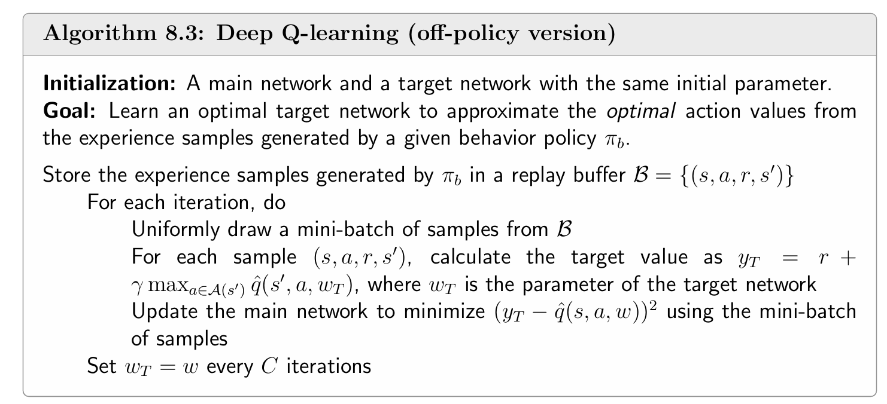
例子
例1
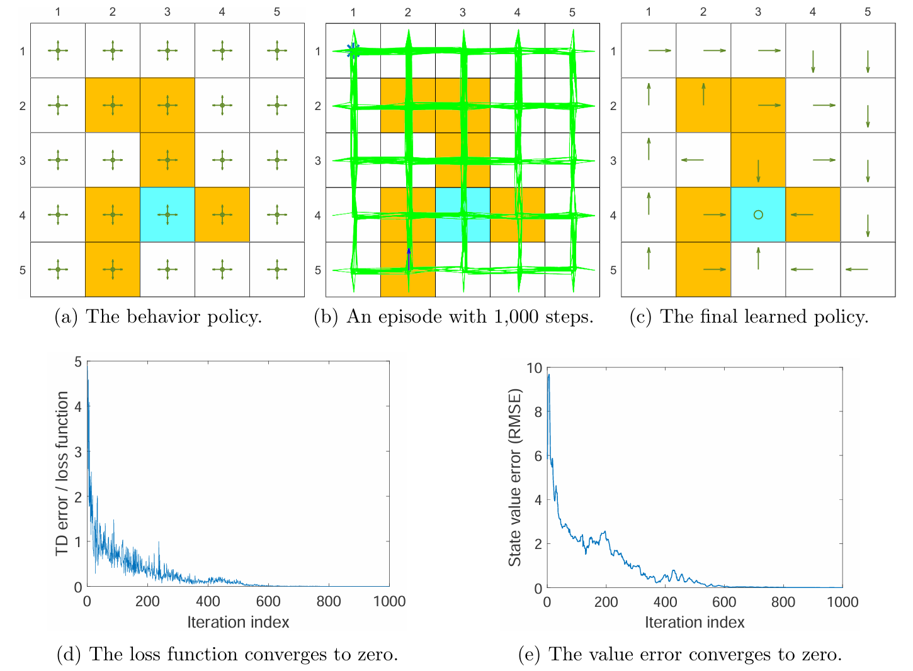
上面的例子是使用 DQN 直接估计所有状态-动作对的 optimal action values。所用的样本只有一个 episode，并且只采样 1000 步，从而 replay buffer 只有 1000 个经验样本。behavior policy 为上图 (a)，访问到的状态-动作对为 (b)。DQN 每轮迭代时从 replay buffer 中均匀抽取的 mini-batch 样本的批大小为 100。图 © 是根据 main network 对 action values 的近似结果转变得到的 greedy policy。
改例中，main network 和 target network 结构一样，都是隐藏层为一层 100 个神经元的神经网络。输入是状态 s s s ( x , y ) (x,y) ( x , y ) a a a
神经网络的输入输出结构也可以改为：输入是状态 s s s ( x , y ) (x,y) ( x , y )
由上图 (d) 和 (e) 可以发现，损失函数和 state values 误差都收敛到了 0，说明神经网络近似的效果非常好。本例仅仅使用一个 1000 步的 episode 就能得到如此好的拟合效果，既得益于神经网络极强的近似的泛化能力，由因为经验样本可以被重复使用。
例2
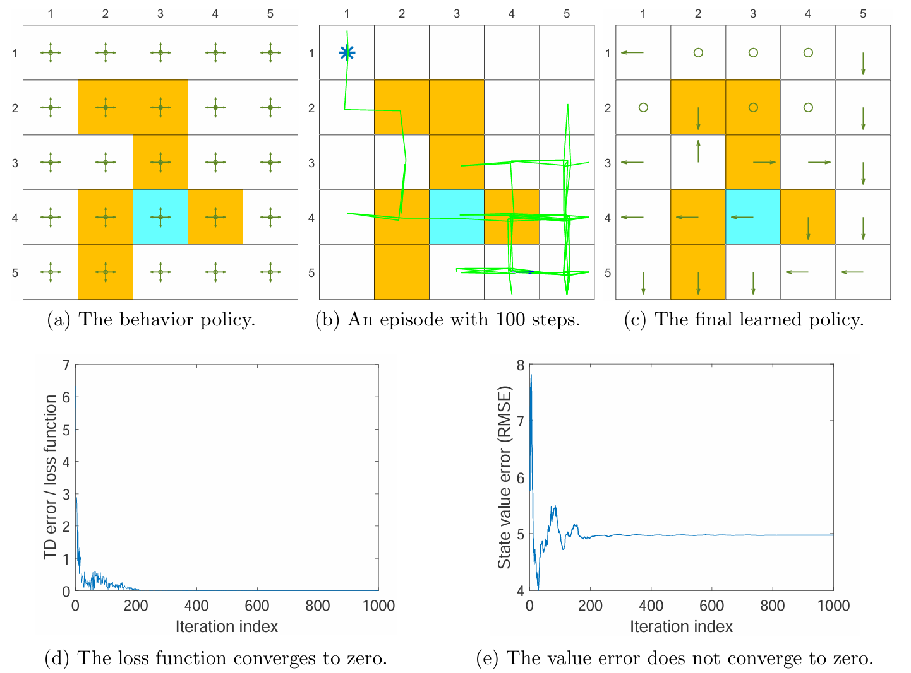
上面的例子使用的样本更少：仅使用一个步长为 100 的 episode。通过上图的结果可以发现，尽管神经网络能够在少量样本下得到很好的训练，损失函数降为 0，但是 state values 的误差并没有收敛到 0。这说明在样本非常少的情况下，神经网络也能够正确地拟合 给定的经验样本，但是经验样本本身并不能够充分体现 环境本身。
该例子深刻揭示了 DQN 中 “损失函数收敛” 与 “策略最优” 并非充要条件：前者仅代表神经网络对已有经验样本 的拟合程度，后者依赖于经验样本对全状态空间 的代表性。当样本极少时，过拟合 经验样本极易，但泛化至全局最优极难，这凸显了高效探索（Exploration） 在深度强化学习中的关键地位。